Augmented Malay Rebab (Auger) for Multimodal Gesture Tracking and Aesthetic Sonification: Balancing Tradition with Transformation
Abstract
This paper presents Auger, an e-Rebab that extends the traditional Malay Rebab through gesture tracking and aesthetic sonification, allowing the exploration of a new sound-world of music composition that balances tradition with transformation. Whilst also attracting new performers to try this instrument, this practice eventually elicits cultural growth across cultural borders for various musical composition-performing styles and venues while preserving the essence of this intangible Malay cultural heritage. Grounding the e-Rebab in tradition, the Auger is 3-D printed from a scanned traditional Malay Rebab to preserve the essence of its structural design identity, durability, mobility and easy maintenance. Likewise, the instrument’s traditional playing gestures are identified based on existing traditional Malay Rebab repertoire performances in Malaysia and further explored through professional Malay Rebab musicians including possible strings extended playing techniques similar to a violin. The Auger is embedded with multimodal gesture sensors and the gesture datasets are sonified in real-time through a procedural audio digital signal processing chain in Pure Data (or alternatively Max/MSP) by the composer according to the performer’s response and interpretation on the diffused audio (tape), performer’s gesture-based synthesised sounds produced and notated graphic music score. The traditional Malay Rebab playing gesture data can be archived for further studies in physical modelling, Malay traditional music pedagogy and neuro-motor rehabilitation application.
Author Keywords
Malay, Rebab, Augmented Instrument, Electroacoustic Music, 3-D printing, Gesture Sensor
Introduction
The Malay Rebab, a bowed spike fiddle instrument with a distinctive spike, is played to melodically lead traditional performance and rituals in Malaysia including Makyung dance-theater, Tarik Selampit and Main Puteri. A handful of music composers have started using the traditional Malay Rebab in Western traditional music settings using experimental compositional techniques, for example, the emergence of electrically amplified Malay Rebab with equal-tempered tunings applied1 in the pop-traditional contemporary music scene performed by the Orkestra Traditional Malaysia (OTM). Nonetheless, extending the sonic world of the traditional Malay Rebab instrument through the instruments traditional playing gestures via electroacoustic music composition approach such as multimodal data-driven sound (sonification) is rather unexplored and has never been studied comprehensively. It is in this context we present Auger, a 3-D printed prototype version of the traditional Malay Rebab that has both standard acoustic sound production capabilities augmented by synthesised sound based on the performer's playing gestures.
Sonification is used within an artistic context primarily for aesthetic purposes with the support of scientific-technical methods and to express data-driven music; aesthetic sonification. Auger refers to and extends the existing research on developing a tactile gesture sensor based violin (hyper instrument and augmented violin) by Chantelle Ko et. al [1] Tobias Grosshauser [2]. The Auger emphasises performer’s tactile response and articulation on the instrument’s physical structure and augmented sound production mechanism that is mimicking similar traditional Malay Rebab sound gesture production quality. This led to playing gesture aesthetic sonification experimentation in assimilating extended playing techniques similar to a violin and other string instruments. Moreover, the Malay Rebab is played either seated on the floor or in a raised sitting position. In both cases the instrument is held parallel with the performer's torso Image 1.

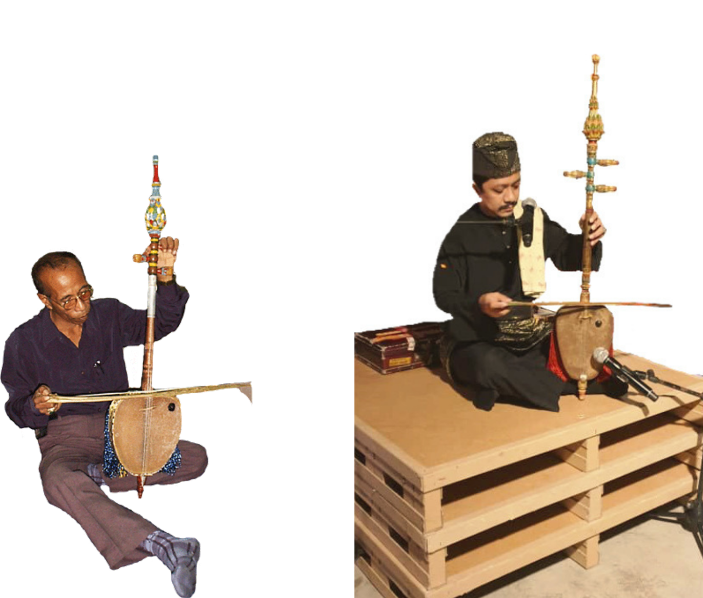
Traditional rebab playing position (Rick Shriver, 1999 [left image] from https://www.rickshriver.net/cordofons2.htm) and on platform raised (Tazul Tajuddin, 2021 [right image].
The traditional musicians occasionally rotate around the length of the instrument to bow neighbouring strings for embellishment. We propose that this rotation around the length of the instrument (rotating around the neck or spike axis)can be explored as an avenue for augmenting the traditional playing gesture position, building on the work in violin real-time gesture tracking system studies explored by Laurel S. Pardue et al. [3] The instruments traditional natural 90 degrees vertical spike fiddle playing position with sitting on flat floor surface is possible in defining better motion of freedom gesture controlled by performer’s upright playing position, inline with the instruments vertical Z-axis compared to a violin or cello (about 45-75 degrees from vertical Z-axis) in articulating the acoustic cues within euclidean space for spatio-temporal composition based performance. The traditional Malay Rebab playing gesture data is archived for future studies in physical modelling, Malay traditional music pedagogy and neuro-motor rehabilitation application.
Instrument Structural Fabrication
The Malay Rebab is a three string spike fiddle Malay traditional music instrument in South-East Asia and played similarly to a Western traditional Violin (e.g., see Ulrike G. K. Wegst., 2006 for a review on woods for soundboards) by exciting the strings to vibrate with horse hairs or nylon lines stretched and attached to a curved wooden stick similar to a "Bach bow". The Malay Rebab instrument structure is made out of softwood (typically jackfruit wood) and constructed based on four main parts which are the leg (kaki), body trunk or resonator shell (badan)2, neck (leher) and head (kepala) as described in Image 2. Moreover, the strings3 rest on a bridge known as pacat that is placed on a thin rumen leather membrane (from cattle or buffalo stomach) covering the front body shell known as kulit muka which acts as a resonator membrane to amplify the sound produced by the bowed strings [4]. The traditional Malay Rebab instrument design structure is based on Malay cultural landscape and the realm of Malay’s visual art that is customarily associated with symbols of nature [5]. For example, the head of the rebab design structure is inspired from a bamboo shoots motif and this can be traced in many other Malay traditional art works such as traditional clothing fabric pattern, architecture design motif and literature symbolism. In addition, the Malay rebab structure design include several feminine motives; the curved heart shape resonator body of the Malay rebab symbolises the curves of a female body and the stingless bees (meliponines)-wax cone resonator damper known as susu, which in English meaning milk, is attached on the upper left corner of the resonator membrane suggesting the female body part.

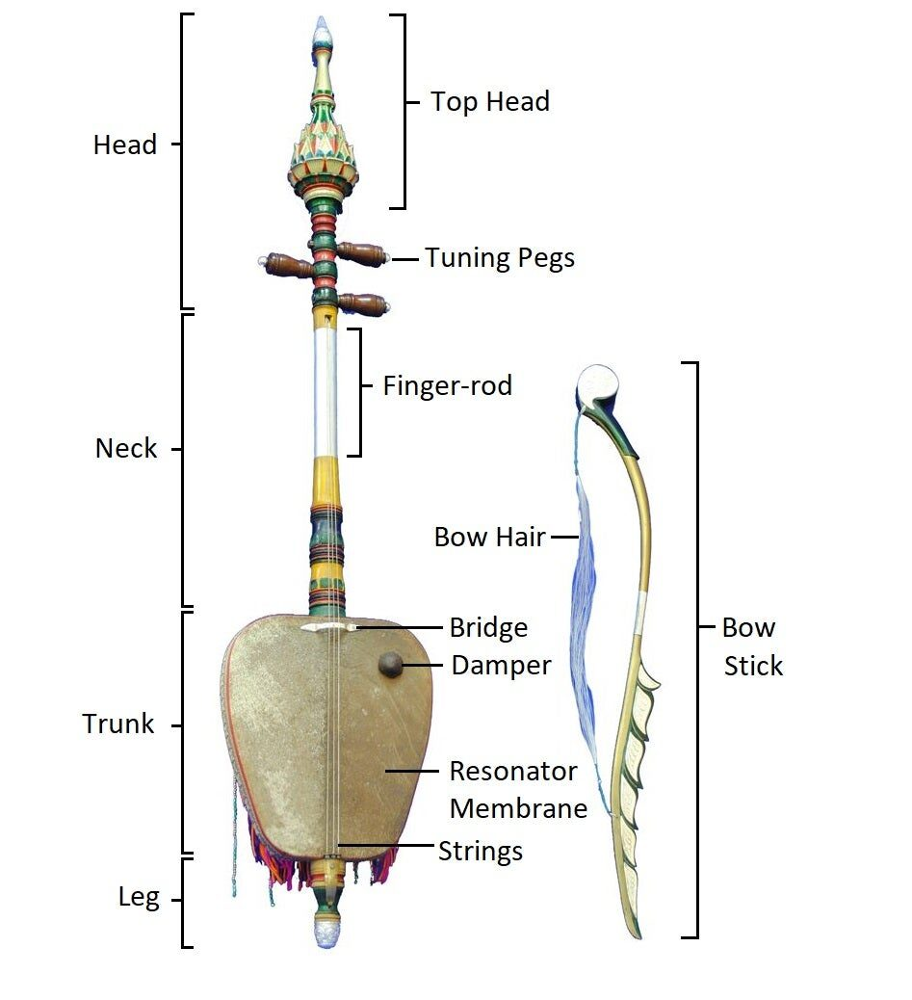
Traditional rebab anatomy label with bow.
Auger structural design is based on a 3-D scan of a traditional Malay Rebab which was generated by a a non-destructive inspection method via Computed Tomography (CT) scanning and 3-D model mesh post processing, a method which has previously been used on the scanning of traditional violins such as Stradivarius violin [6]. A full working 3-D printed modern Malay Rebab using polylactic acid (PLA) filament that has similar sonic quality to a traditional Malay Rebab is fabricated with an improved tuning system with geared apparatus with attached tuning pins that is traditionally known as pemulas and a detachable honeycomb body-resonator membrane (Image 3 and Video 1). The Malay Rebab fundamental instrument structure design features that are based on the Malay cultural motives are applied in designing the Auger to maintain the instrument’s cultural-visual identity. For comparison, the Indonesian Rebab has a smaller overall structural size with two bowed strings, longer thinner tuning pins and a thinner pointy plain top head-neck. In Auger, the rigidity of the 3-D printed prototype is improved through the use of a solid hardwood neck in order to support the string tension. This hardwood neck forms the backbone of the instrument (Image 4), and helps symbolise the root identity of the instrument. A stronger 3-D printing infill structure design is utilised to improve the overall structure and reasonable instrument weight4. However, 3-D printing materials with a good balance between tensile strength and rigidity such as acrylonitrile butadiene styrene (ABS) or environmental friendly (biodegradable material) 3-D printing filament such as Poly Lactic Acid (PLA) that is reinforced with carbon fibre can be used to increase resistance to bending and breaking from approximately 15 to 20kg total string tension5. However, numerical simulation on the instruments 3-D structure model via Finite Element (FE) modelling can be applied to study the durability and strength of the instrument based on the given string tensions for alternative fabrication materials selection.
3-D printed detachable endpoint is secured at the bottom end of the Auger’s leg. The end point is embedded with a threaded screw adapter which will be used to install a detachable endpin spike pole with round rubber floor protector for raised sitting (on a chair) playing position (Image 4). This will allow the instrument to be adapted with Western orchestra stage performance settings. Moreover, the Auger threaded screw leg also functions as a stopper to avoid the instrument slipping on the floor surface and support the instrument’s body rotational playing gesture movements. Add-on interface and processor is easily installed and intergraded within the Auger’s body trunk along its spine rod. The acoustic sound of the Auger is projected through the resonator shell with adequate dynamic range. To obtained a desired damping effect quality of the acoustic sound, we had design an bridge that can be fitted at the bottom with various damper materials such as plastic, rubber and wood. The 3-D printed resonating membrane can be fitted on Auger’s resonator shell to enhance acoustic playing experience with individualistic preference of tone color (timbre). Unlike wooden and skin made instrument, the acoustic sound performance quality of Auger’s and 3-D printed modern Malay Rebab acoustic sound will not be influenced by the changes of surrounding moisture and temperature due to alternative materials applied. This will ensure coherent and consistent acoustic sound performance quality of the instrument.

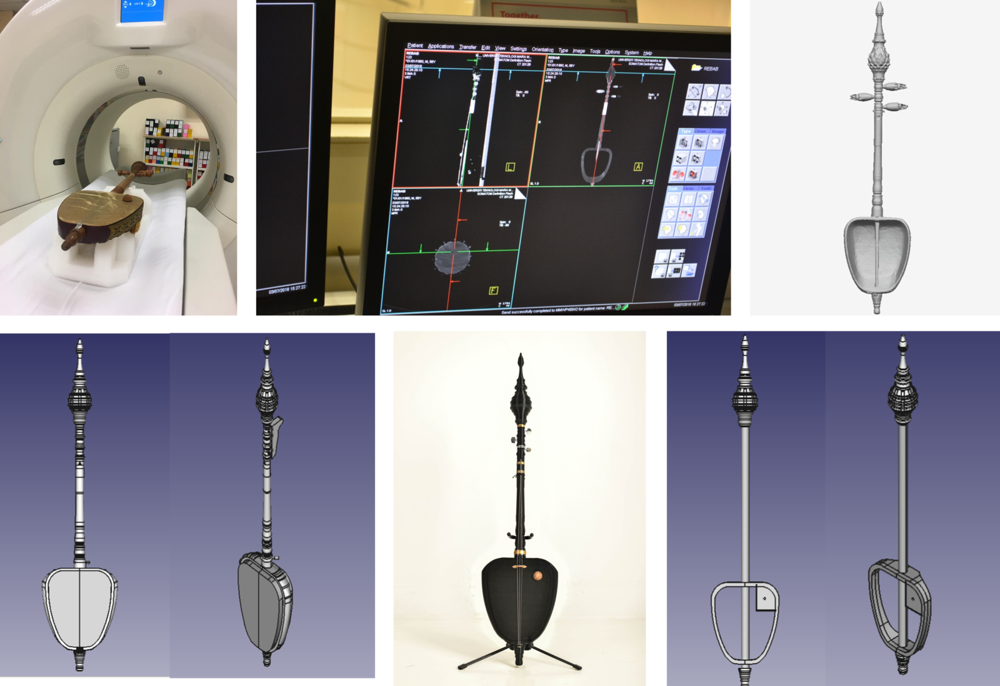
Non-destructive inspection of a high-grade quality traditional Malay Rebab via CT-Scanning for instrument’s 3-D modelling (top row), design improvement and fabrication in developing a new form of modern acoustic Malay Rebab and the Augmented e-Rebab (Auger) (bottom row).
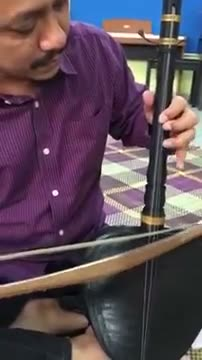
▶Working prototype of a 3-D printed modern acoustic Malay Rebab as a pilot design for Auger.

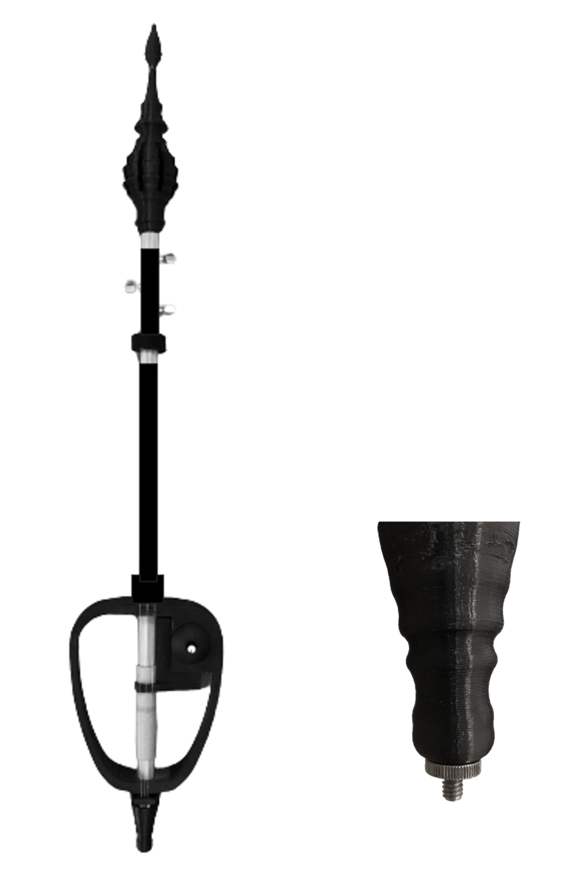
Auger design and its 3-D printed endpoint embedded with threaded screw adapter (1/4 to 3/8 inch and vice versa) for endpin spike pole installation.
Sensor Tracking Design
Several types of sensor modules have been used to detect both the traditional (fundamental) and extended Malay Rebab playing gestures in the Auger. The sensor data is processed by a microcontroller (Arduino Nano with bluetooth module add-on board or alternatively ESP32) to read gesture sensor signal input for gesture data, and the detected playing gesture datasets are then transmitted wirelessly (via bluetooth) into Pure Data software running on a laptop for post-processing (data interpretation) either in MIDI or Serial communication format [7]. The microcontroller (MCU)6 and ad-on modules were supplied with 9 Volt DC supply from a rechargeable lithium-ion battery. The 9 Volt DC supply will ensure that the MCU 5 Volt output pin voltage is stable and consistent throughout its operation. However, a voltage follower (buffered voltage) circuit is applied for the sensor module to reassure a stable sensor voltage signal output7.
Charlotte G. M. Desvages [8] and Matthias Demoucron et al. [9] have examined the sound timbre and articulation produced by measuring bowed violin strings forces for physical modelling and sound synthesis which the several bowing gesture parameters such as bowing stroke speed, bowing press-tension and bowing travel distance position from the bridge had affect the string sound intensity (dynamic) and sound envelope (articulation). Adjusting the bowing playing position distance along the string between the bridge and the fingerboard such as violin (sul tasto or sul pont.) will result in various harmonic richness content and articulation of the bowed string. However, the traditional Malay Rebab is played predominantly through bowing the strings with a curved "bach bow" (Image 5). Moreover, the bowing travel distance position from the bridge in traditional Malay Rebab bowing technique is rather fixed and the bowed sound articulation is manipulated by the bow hair-hand gripping tension and bow hair-string pressure. Leading to this, the fundamental Malay Rebab bow playing technique gesture involves three axes of gesture bowing forces (net resultant force), whereby the performer needs to control the bowing forces by controlling the bow hair-hand gripping pressure force and bow-string press-down tension force and control the bowing stroke speed .

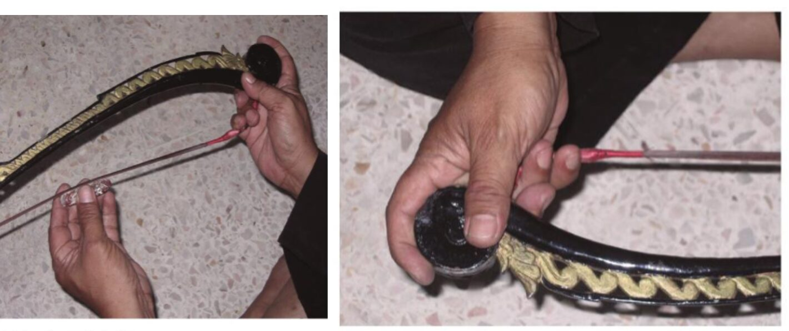
Fundamentals of traditional Malay Rebab bow holding and playing techniques (Zahari, R., & Umar RS, S. et. al (2011), pp 83-91).
To capture these multimodal gestures and determine the net force, we developed a sensor consisting of three gesture mechanical-sensors ; 1) a micro rotary-encoder wheel which the bow string passes through strings for reading the bow's stroke speed; 2) a carbon-based resistive rubber cord stretch-sensor attached behind the bow hair for reading the bow hair tension and; 3) a carbon-based resistive film grip pressure-sensor attached at the bow hair hand grip position for reading the bow hair gripping pressure force (Image 6 & Image 7). The stretch sensor’s resistivity output range can be predicted mathematically based on the minimum-maximum stretch length, cross-section surface area (thickness) and constant material’s resistivity value (Image 8)[10].

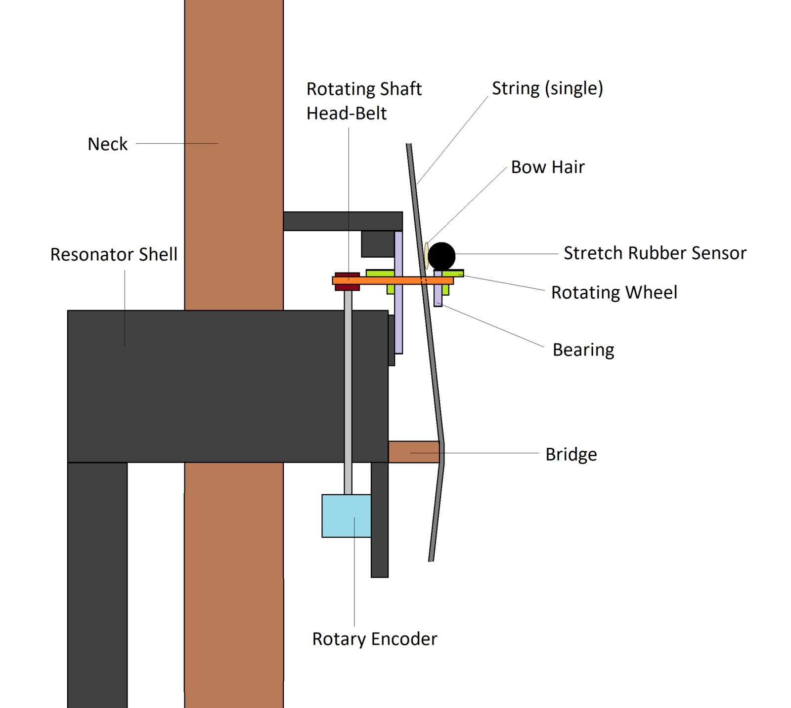
Geared wheel encoder speed sensor under the upper bridge through strings.

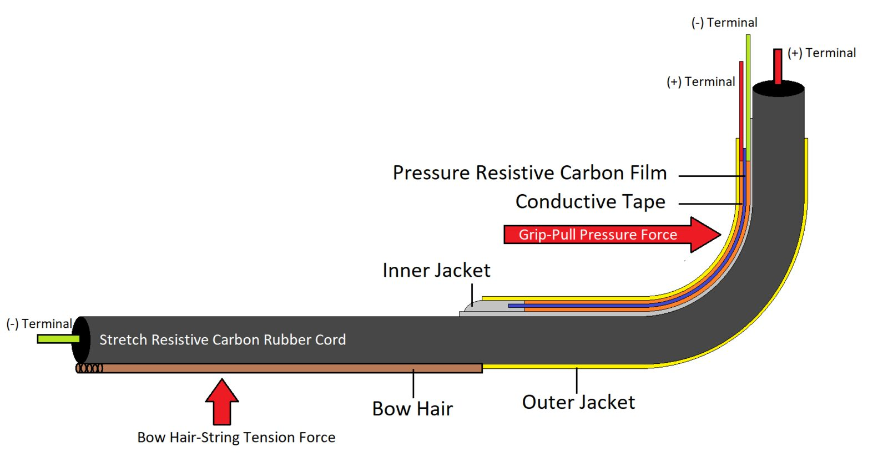
Gripping pressure sensor and resistive stretch sensor behind bow hair.

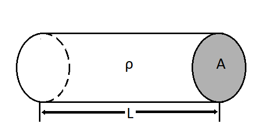
Mathematical equation of the resistance (R in ohm) value for a cylindrically shaped conductor at measured length (L in metres) with material resistance constant at a given length (ρ in ohm•metre), and cylindrical cross sectional area (A in metres) as follow:
All sensors are smoothed via an RC low-pass filter circuit according to the formula fc= 1/(2πRC) where resistance (R) at 220K ohm, capacitance (C) at 4.7µF and cut-off frequency (fc) at 0.154Hz. However, stretch and grip pressure sensor data signals are smoothed further digitally via average reading data conditioning (David A. Mellis, 2007, Tom Igoe, 2012)8 (Image 9 & Image 10).

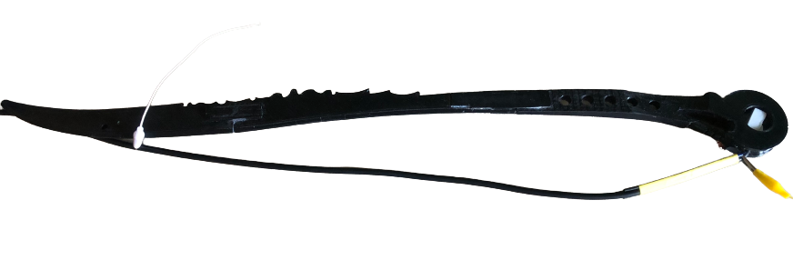
A 3-D printed modern Malay Rebab bow embedded with multimodal gesture sensor.

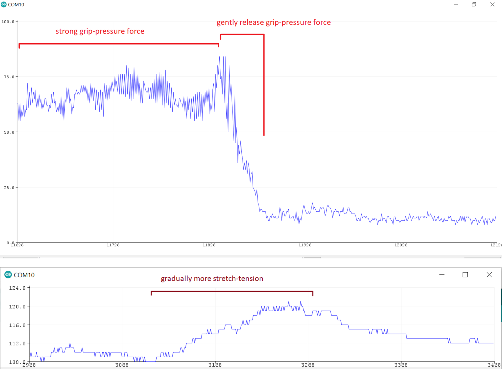
Grip-pressure datasets against time event graph plot with smothering filter circuit (middle), and stretch-tension datasets against time (milliseconds) event graph plot with digital dataset smoothing (below) without buffered voltage (also known as voltage follower) supply.
The composer or performer can choose to utilise either or both dataset output and instrument acoustic sound output from the instrument bowing gesture for desired sound production. For example, contacting and stroking the bow hair on the micro rotary wheel encoder while ignoring the strings will produce bow stroke speed data output only. Extended rebab bowing technique such as pressure bowing and bow hair or wood-string tapping for this Rebab is possibly applied via bowing gesture data conditioning and sound synthesis-sonification in an electroacoustic music composition.
The traditional Malay Rebab is a fretless instrument and playing pitch is based on the right-hand upright finger positioning (fingering) along the bowed (or plucked) string at the upper middle neck area. The fingering gesture for the Auger is based on a simplified version of Finger Position and Pressure Sensing Techniques for Strings and Keyboard Instruments by Tobias Grosshauser and Gerhard Tröster [11] for bowed string instrument; a single carbon based resistive conductive sheet9 is fitted along a 3-D printed fingerboard-rod and covered with three suspended conductive strips that are layered on top with a non-conductive layer between. A finger pressing on the bowed string will make contact with the non-conductive layer and force the suspended conductive strip beneath it to make physical contact with the resistive conductive strip (Image 11). The non-conductive layer on top of the suspended conductive strip prevents unwanted interference from external electrical sources. Voltage smoothing and buffering (voltage follower) circuits were embedded on each suspended conductive strip to improve the signal to noise ratio (signal jitter), whilst also stabilising the voltage supply. This was achieved with a single voltage supply quad op-amps (such as LM324) [12]. Following this, a 16-Bit Analog to Digital Converter (DAC) module such as ADS1115 16-Bit ADC 4 channel with programmable gain is interfaced between the finger tracking sensor (with voltage smoothing and buffering) and the MCU analog pin for higher input voltage resolution reading (0 to 65,535 counts range/ DC Volt signal) in order to achieve better accuracy in tracking microtonal pitch scale (1200 cents/ octave)10.

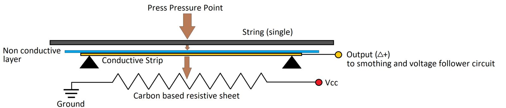
Finger tracking sensor design with electrical resistive sheet sensor for retrieving finger position datasets, this was used along the neck of Auger.
The traditional Malay Rebab is occasionally played by plucking multiple strings near the upper-middle neck simultaneously or separately with several fingertips from the right fingering hand11 to produce a subtle metallic short ringing tone for embellishment purposes. Le Carrou, J-L., Leroy et al. [13][14] utilise an optical vibration sensor as an optical pickup to detect string vibration, mapping the vibro-electro signals into frequency (pitch) and amplitude (dynamic). From this initial sensor reading, further amplitude envelope data analysis and translation is required to categorise the detected vibration from the optical vibration sensor as plucking tone. In the Auger’s string pitch scale is detected using the fingering motion gesture tracking along the fingerboard-rod and the amplitude-envelope is quantified via bowing playing gesture sensor set. Due to this, a set of mechanical-tactile vibration sensors such as piezo film vibration sensor is integrated to detect string vibration amplitude-envelope induced by plucking gestures. Three piezo films are sandwiched between the individual strings and the upper end neck. The sensitivity of the vibration sensor is calibrated within the minimum audible threshold of each string's plucking tone. The sensor is conditioned to specifically active when no bowing gesture is detected, for example, when bowing gesture is detected on the first string (highest string) with miniature rotary encoder wheel, vibration sensor on the second and third string will be activated to receive string vibration induced by plucking playing gesture. Moreover, a similar sensor is utilised in augmenting the instruments musical expression capability over extended playing technique gestures such as right-hand instrument’s body tapping and rubbing, which is only possible to be audibly realised through synthesised sound or electro-acoustic amplification.
Traditional Malay Rebab playing involves rotating the body of the instrument along the vertical upright axis randomly to lightly bow the neighboring bowed string for embellishment purposes. This unique playing technique produces short, subtle and thin sounding whispering tones. The instrument's body playing position is at 90 degrees along the vertical Z-axis of the spike fiddle making it possible in estimating instrument’s orientation in space controlled by performer’s upright rotating playing gesture by using 6-axis (degrees of freedom) inertial measurement unit (IMU) sensor with Kalman’s noise filtering method [15]. Detected bowed sound gesture data caused by the instrument’s body upright rotation can be filtered out by detecting any changes of the instrument’s upright rotation displacement with gyroscope Z-axis rotation degree parameter (Image 12). In addition, other rotation displacement along X and Y axis is explored in extending the rebab sound-world in the form of manipulating the acoustic spatial cue of other sonified playing gesture (ie. bowing, plucking, fingering, tapping etc.) or sound objects. Thus, rotating the instrument’s body orientation is introduced as an extended technique that opens up possibilities for playing Auger in in surround sound or periphonic performance venues, or for spatial sonification techniques. The orientations dataset (Xo,Yo,Zo) is mapped into surround sound auditory display realisation patch for example via vector based amplitude panning (VBAP) method using Pure Data VBAP patch library (Pulkki, V. 1998)12 at up to eight channel octophonic ring diffusion (azimuth and depth cue only) or eighth channel octophonic cube (with elevation cue) or even higher immersive audio spatial resolution (full sphere surround sound) library patch.

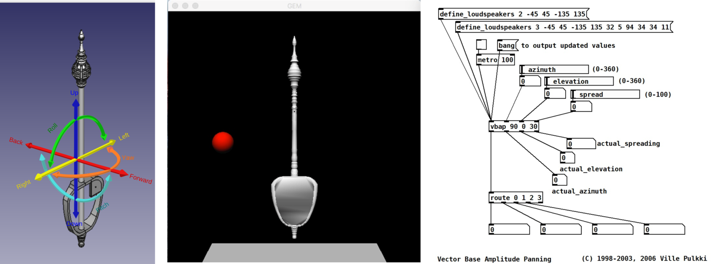
Six degrees of freedom motion for Malay Rebab instrument upright playing position (left) and visual representation of sound object (red sphere) in acoustic space for spatial cues controlled by the rebab orientations in Pure Data-GEM which the dataset is then mapped into surround sound spatial parameters (middle & right).
Sounds are a consequence of motion and or change of energy [16] and in sonification, is an auralisation techniques involving composed sounds with various intensity (dynamic), sound envelope (articulation), tone register (pitch), texture (timbre) and organisations in spatio-temporal (spatial-time) that are used as auditory display to informing the listeners on what form of changes occurred around their surroundings alongside listener’s aural analyti capability (Vickers, Paul et al. 2016); for example, changes in tone registers is ‘commonly’ perceived as changes in height or vertical motion (auditory imagery; graph, symbol, lines etc.). The attentive listeners may react to the perceived sonification by way of either or both physical and mental (causal-semantic) actions [17]. Sonification was introduced by the scientific community to display quantifiable scientific data; for example, the Geiger Counter device in 1908 is one of the earliest and most successful applications of sonification which uses Geiger–Müller tube sensor to detect radioactivity (ionising radiation) and display radioactivity level information that is perceived over the changes of sound state within time, amplitude and frequency domain.
Sonification is also used within an artistic context primarily for aesthetic purposes with the support of scientific-technical methods and to to express music (display personal thoughts and feelings via organised sounds within a time frame) based on the sensed change state of living and non-living object performance (physical-motion and mental); aesthetic sonification [18]. Various sensors are applied to sense quantifiable motion or change of energy from object performance induced by the programmed physical surrounding or mental reaction and this sensed state of change is retrieved in the form of digital data for further sonification-composition process in creating data-driven music [19]. Hence, sonic exploration of string instrument spectral-print derived from bowed, plucked and tapped strings playing gestures are exploited in developing the aesthetic sonification of the augmented modern Malay Rebab (Auger) sound-world in electroacoustic music form while preserving the founding identity of the instrument as a bowed chordophone [20].
Both the traditional Malay Rebab playing gestures and its derivation (extended technique) for the Auger are wirelessly transmitted to a computer, with the raw data being received serially in Pure Data software. The incoming data is then used to control a selection of audio parameters via a data conditioning layer which has been programmed by the composer (Image 13).

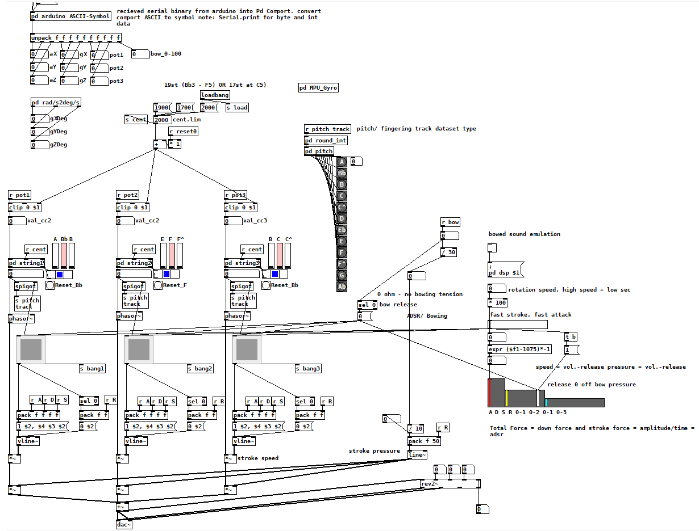
Mapping the sensor data to sonication parameters in Pure Data. A layer of gestural mapping is used as part of the composition process.
Pitch tone register or frequency changes of sampled Malay Rebab and (re-)synthesised sound that is based on bowed-plucked string spectral-print audio is emphasised to display the traditional Malay Rebab acoustic sounding pitch playing gesture data (string bowing and string fingering combinations) for the musician to be familiar and adapt with the origin of the instruments as chordophone. On the other hand, found sounds and sound objects (unit of sound such as spatial, spectral and their changes within time frame that exclude its cultural and sound source origin information13) including local natural-culture soundscape [21] were explored as augmented sound-world for each single or intermodal of traditional and extended non-acoustic sounding playing gestures by-way-of gesture sensor data driven audio processing with individual sonic character output for coherent auditory display perceived; for example, the instrument’s body orientation playing gesture data is only assigned for audio spatial changes output only.
Suggested playing gesture sensor dataset for the type of aesthetic sonification for the Auger based on its data mapping and conditioning are listed in Table 1 through the auditory playing gesture display that is inline between the state of playing gesture changes and the state of sound changes in real time (ie. time-tempo-rhythm, amplitude-intensity-sound envelope-articulation, frequency-tone register-pitch-timbre etc.) over parameter manipulations of the audio processing chain as laid out by the composer. Several playing gesture sensor dataset are conditioned in several sets of combination to produce variation of audio manipulation results. These conditioning sets can be selected by a dual-axis XY joystick with push button via right hand thumb, that is installed behind the Auger’s upper neck.
Playing Gesture Datasets Condition | Type of Sound and Synthesis Elements Control-Feedback |
|---|---|
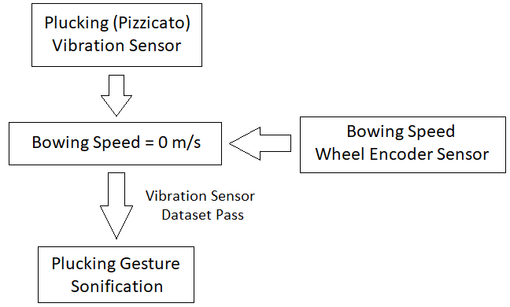 | a)Plucking string sound envelope eg. percussive plucking sound envelope b) Audio parameter event triggering with finger-string tracking sensor |
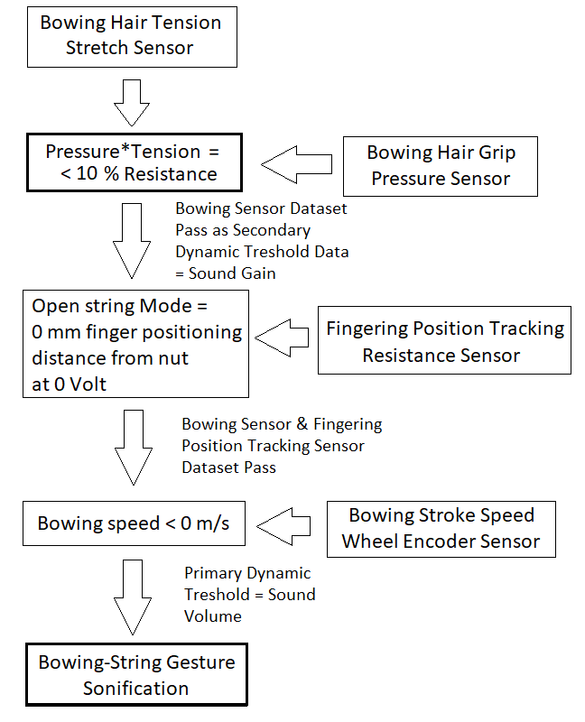 | a) Bowing-string sound envelope and pitch eg. synthesised bowed rebab sound |
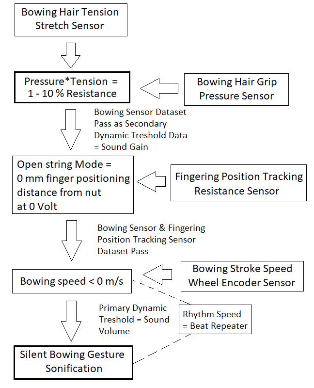 | a) Silent bowing sound event triggering with finger-string tracking sensor eg. rhythmic speed playing changes or tap delay speed (beat repeater speed) |
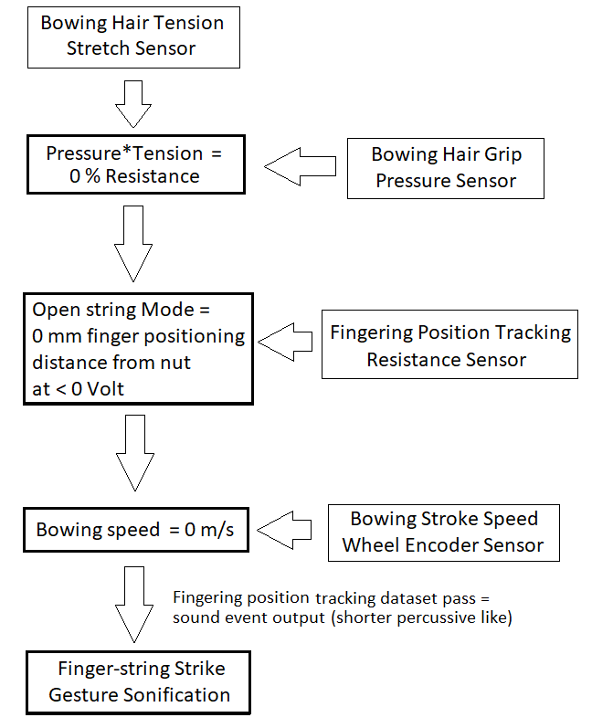 | a) Finger strike-string sound envelope eg. Drumming or hitting percussive sound envelopes. |
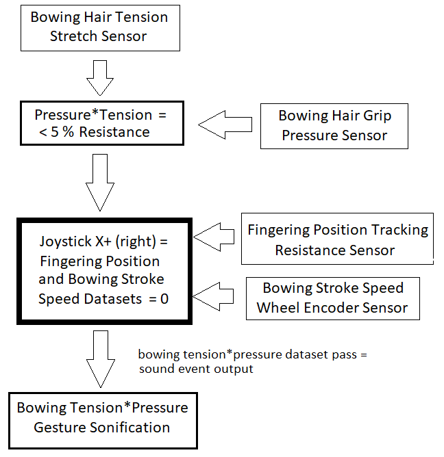 | a) Bow hair-string tension for sound intensity adjustment and audio processing parameter amount adjustment eg. Reverb dry-wet amount. b) Bow hair tapping for audio parameter event triggering (force threshold) eg. mute |
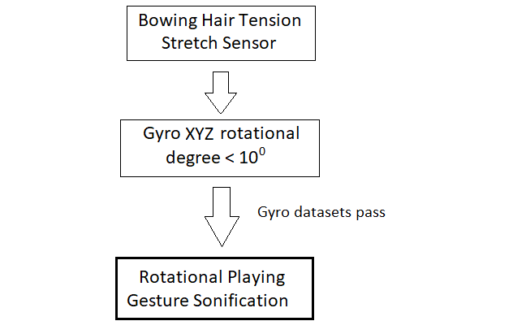 | a) Gyro orientation for acoustic spatial cue |


Like many other traditional Asian music cultures, oral tradition has been a central practice for many ages in learning, playing and performing the Malay Rebab and its repertoire [22]. Cultural knowledge sharing through vast trade networks of the Silk Road in the past resulted in adaptation of cipher notation in Malay Rebab music including Malay gamelan and is still practised until nowadays in Malaysia; the cipher notation usually consists of scale degrees numbering for pitch representation, several layer of lines across the numbering set or thick dot between the numbers for rhythmic gesture representation (thick dot as crochet rest, single line above a number as quaver value pitch, single line above thick dot as quaver value rest and so on) and bar line with symmetric beat metre [23]. This simple form of notation enables the Malay Rebab musician to decipher (interpret) the notated musical idea expressively, allowing personal embellishment . Through the use of the moveable-Do system (which consists of specific pitch drop or raise tuning on the low open string followed by other strings re-tuned at perfect 4th interval) simple transposition is facilitated allowing the instrument to adapt to the singer’s tessitura.
Western music staff notation has also been absorbed into or fused with the Malay Rebab cipher notation especially the Malay gamelan for uniform mediation of world music knowledge across various foreign cultures and languages; this can be observed in formal traditional music learning institutions across Malaysia. Following this, the developed Auger aesthetic sonification materials are organised within a time frame in a form of graphical notation based on both Western and local music notation tradition approach. The graphic notation developed based on Western contemporary-classical notation of violin and electroacoustic music including for spatial music performance [24][25](Image 14) is used to instruct the performer to perform the notated sonified playing gestures and set off the performer to interpret (aesthetic perception) and react to the degree of sonic state changes perceived that is directly tied over performed notated playing gestures and projected sonification-composed sounds including its acoustic surrounding feedback. The illustrated music composition materials which consist of staff notation is used to indicate tone register for each open string rather than pitch scale. The piece can be written with metric division or cues for articulating musical idea phrases and for synchronising with other performance gestures14. The amount of bow-hair pressure weight playing is described proportionally to the size area of the shaded geometric shapes while unshaded geometric shapes above it indicate the bowing stroke speed variation. Audio spatial cues were articulated with a symbol that represents the top view of the rebab head [26]; the performer will require to point and position the tip of the top head on the dot symbol and the path taken to travel from each dot symbol are left for the performer to decide. The surround speaker is set up symmetrically around the audience while the player need to use in-ear monitoring earphone with stage sound mixed that consists of the Auger’s aesthetic sonification output and the surrounding sound from the stage in binaural format live audio monitoring.

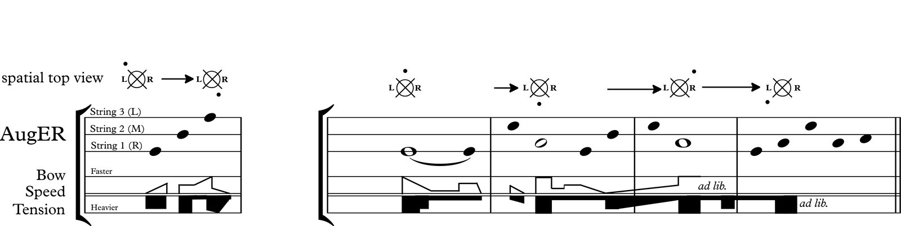
An example of graphic music notation materials to compose new electroacoustic music for Auger based on playing gesture datasets aesthetic sonification.
In Video 2, the Auger’s aesthetic sonification for fundamental Malay Rebab playing gesture is demonstrated using found biophonic soundscape of a Mudskipper vocalisation that is recorded with a Hydrophone B&K 8103 in an aquatic tank15. The found sound (Video 3) is synthesised in a digital audio workstation software (DAW)16 audio processor and performed driven by the playing gesture datasets via serial to MIDI communication format. Pure Data is used as serial to MIDI format conversion and virtual MIDI port bridge software such as Loop MIDI17 is used to send MIDI data from Pure Data to DAW. The original found sound underwent several audio processing chains including frequency filtering, distortion, harmonic synthesis, pitch shifting and more that produce distinctive and coherent sonic quality that is able to represent Auger’s individual playing gestures. Articulation of tone register is perceived through the bowing hair-string tension and the speed of beat repetition is proportionally output with bowing stroke speed. The dynamic of the synthesised sound is expressed through the bowing hair grip tension.
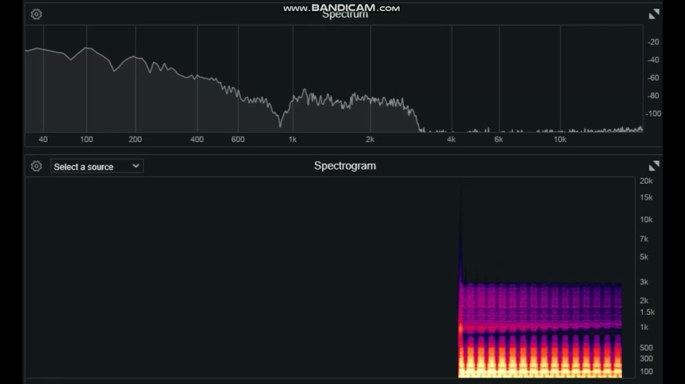
▶Example of Auger’s aesthetic sonification using found biophonic soundscape recording of a Mudskipper vocalisation that is synthesised and performed driven by Rebab playing gesture datasets.
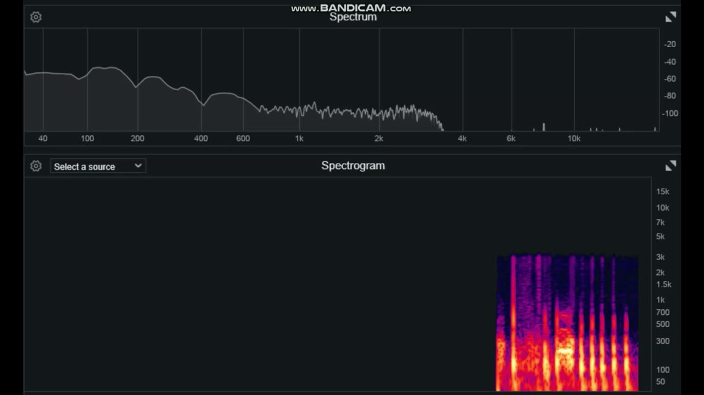
▶Original found biophonic soundscape sample from a Mudskipper vocalisation (audio by Polgar, G., Malasavi, S., et al. 2011)
Conclusions
Auger is a working prototype of an electro-acoustic musical instrument that takes the form of a modern Malay Rebab instrument and extends it's playing gestures. The resulting sound-world that Auger explores is developed with fundamental traditional design features for cultural identity and embedded with multimodal gesture sensor interface. Moreover, traditional and extended Malay Rebab playing gesture expressions are tracked for producing augmented sound-world of the Malay Rebab through aesthetic sonification and real time data-driven-music composition and performance. Auger is a do- it-yourself (DIY)-able which is fully customisable for design and sound personalisation, durable, easy maintenance and has weight approximately similar to the traditional Malay Rebab. The structural design and fabrication materials of Auger and other forms of modern Malay Rebab via 3-D printing including other low-cost and efficient manufacturing methods may be explored with vibroacoustic analysis and evaluation to produce higher quality of rebab acoustic and electroacoustic sounds. Without depending or concern too much on how or who can play the instrument, regardless of their cultural barriers, this research encourage and inspire the next generations for new ideas and interest on both the traditional Malay Rebab and the augmented-e Rebab instrument playing and music to elicit cultural growth across cultural borders for various musical composition-performing styles and venues while preserving and continue practising the essence of this intangible Malay cultural heritage. Following this, the traditional Malay Rebab playing gesture data is archived for further studies in physical modelling, Malay traditional music pedagogy and neuro-motor rehabilitation application.
Acknowledgments
The author would like to thank to the co-authors of this paper, P— B— and Mo— Kam— Hus—-, including other project collaborators Mo— Sh—- Mohd Khalid from Ui— Fac— of Med— and the Radiology Department of S— Bul— Hos—for assisting the CT-Scan session, Siti A— Jus— from Ui— Maker Lab and Rizal Effe— Mo— Na—- from U— Faculty of Mechanical Engineering for for advising the 3-D printing process, -.-.- Lab and Hacker Space U—— of ——— for providing the tools needed to develop the Auger, Bob from C—— Music Shop for the free bow hair, Che — Ju—- from School of Arts U— for sharing the knowledge of traditional Malay Rebab, Ba— Za— Ni—- as motivator and lastly, N— F-—l my principle supervisor at Department of Music U—- of B—- in supervising the technical-creative materials for this research.
Ethics Statement
Socio-economic fairness
Auger primarily used open source software namely, Pure Data and Arduino IDE which includes free digital access to the updated libraries and usage-troubleshoot learning materials from respective software developer website and users' forum via online community. This will ensure wider accessibility for someone to develop similar instrument making and approach. Although Auger is developed through 3-D printing method, someone may develop this instrument with found object or recycle materials that has similar shape or can be shaped similar to Auger or traditional Malay Rebab structure design and able to be put together and performed similar fashion. Auger is a self-funded project and the electronic components used for Auger is commercially available at affordable price.
Data & privacy
All source for open data (code, library patch, images etc.) following the license(s) by the original authors were acknowledged in this paper through footnotes, citation references and data descriptions. The working prototype of 3-D printed modern Malay Rebab is registered for patent design through Intellectual Property Corporation of Malaysia (MyIPO) in 2019 with patent pending status (as in 2022). However, the content of this paper may be utilised for non-commercial purpose with visible credit mentioned of the author and co-authors.
Environmental
Auger structure design is fabricated with recyclable materials such as metal, woods and plastic polymer (3-D printing filaments) and developed via hand tools and mid-range 3-D printer for home which reduce the needs of heavy machinery process such as lathe machine etc. that contributes to noise pollution, large manufacturing waste byproduct and high manufacturing power consumption. However, the instrument may be fabricated using alternative biodegradable and recyclable materials while maintaining the instrument’s performance quality and shape identity.
Footnotes
Typically the Malay Rebab open strings are tuned at perfect 4th appart pitch intervals that is C4, F4 and Bb4 and this set of tuning’s register may change according to the tessitura of the leading vocalist or the melodic range of the repertoire.
↩The Malay Rebab resonating body shell (badan) is also known as tengkorak or tempurung by a few Malay Rebab luthiers.
↩Current traditional Malay Rebab uses electric or acoustic guitar wound steel strings, replacing the silk strings for durability and more volume sound intensity projection.
↩The traditional Malay Rebab has several sizes and heights that are crafted based on the length of the player’s forearm and instrument's tone intensity. The weight of the instrument is approximately between 0.5 to 0.8kg.
↩Here, we are using the generic McDonald Patent Universal String Tension Calculator (MPUSTC) for total string tension estimation of the three strings Malay Rebab tuned at open string pitch C4, F4 and Bb4 with electric guitar string gauge 30, 17, 13 at two octave scale length approximately 0.36m from https://www.mcdonaldstrings.com/stringxxiii.html .
↩The Arduino Nano MCU can be operated with 7 to 12 Volt DC supply via Vin input (http://www.farnell.com/datasheets/1682238.pdf)
↩Tooley, Mike. Electronic Circuits-Fundamentals & Applications. Routledge, 2007.
↩https://www.arduino.cc/en/Tutorial/BuiltInExamples/Smoothing
↩Pressure sensors can be developed by increasing the resistive sheet layers
↩Arduino Nano MCU analog pin has a 10-bit DAC resolution (0-1024 counts range) with absolute maximum output current at 40 mA (http://www.farnell.com/datasheets/1682238.pdf).
↩Similar to a right-hand pizzicato violin playing technique.
↩- ↩
Smalley, Denis. "Spectromorphology: explaining sound-shapes." Organised sound 2.2 (1997): 107-126.
↩See Gould, Elaine. Behind bars: the definitive guide to music notation. Faber Music Ltd, 2016.
↩Original recording of found sound sampling is made by Polgar, G., Malavasi, S., Cipolato, G., Georgalas, V., Clack, J. A., & Torricelli, P. (2011). Acoustic communication at the water's edge: evolutionary insights from a mudskipper. PLoS One, 6(6), e21434.
↩Here, Ableton Live DAW audio processor is utilised. Alternatively, freeware DAW and audio processor plugins can be applied in similar fashion.
↩- ↩
References
- ↩Ko, C., & Oehlberg, L. (2020). Touch Responsive Augmented Violin Interface System II: Integrating Sensors into a 3D Printed Fingerboard. New Interfaces for Musical Expression.
- ↩Großhauser, T., Großekathöfer, U., & Hermann, T. (2010). New sensors and pattern recognition techniques for string instruments. Proceedings of the 2010 Conference on New Interfaces for Musical Expression++ (NIME 2010), Sydney, Australia.
- ↩Pardue, L. S., Harte, C., & McPherson, A. P. (2015). A low-cost real-time tracking system for violin. Journal of New Music Research, 44(4), 305–323.
- ↩Alphonsus, C., Zahari, R., & Rs, S. U. (2011). Makyung, the Mystical Heritage of Malaysia. ITBM.
- ↩Zakaria, S. A., Latif, R., & Bahauddin, A. (2018). Malay Wisdom in the Motifs of Bamboo Shoots. SHS Web of Conferences, 45, 02004. EDP Sciences.
- ↩Garcia-Cobian, J., & Bissinger, G. (2001). Creating an accurate solid model of the violin from CT scans. IMAC-XIX: A Conference on Structural Dynamics, 1, 373–378.
- ↩Cook, M. (2015). Arduino Music and Audio Projects. Apress.
- ↩Desvages, C. G. M. (2018). Physical modelling of the bowed string and applications to sound synthesis.
- ↩Demoucron, M., Askenfelt, A., & Causse, R. (2009). Measuring bow force in bowed string performance: Theory and implementation of a bow force sensor. Acta Acustica United with Acustica, 95(4), 718–732.
- ↩Tooley, M. (2007). Semiconductors. In Electronic Circuits-Fundamentals & Applications (pp. 97–124). Routledge.
- ↩Grosshauser, T., & Tröster, G. (2013). Finger Position and Pressure Sensing Techniques for String and Keyboard Instruments. NIME, 13, 27–30.
- ↩Tietze, U., Schenk, C., & Gamm, E. (2015). Electronic circuits: handbook for design and application. Springer.
- ↩Le Carrou, J.-L., Chadefaux, D., Seydoux, L., & Fabre, B. (2014). A low-cost high-precision measurement method of string motion. Journal of Sound and Vibration, 333(17), 3881–3888.
- ↩Leroy, N., Fléty, E., & Bevilacqua, F. (2006). Reflective optical pickup for violin. 6th International Conference on New Interfaces for Musical Expression, 1–1.
- ↩Dziwis, D. T., Lübeck, T., & Pörschmann, C. (2020). Body-controlled sound field manipulation as a performance practice. Audio Engineering Society Convention 148. Audio Engineering Society.
- ↩Vickers, P., Hogg, B., & Worrall, D. (2017). Aesthetics of sonification: Taking the subject-position. In Body, sound and space in music and beyond: multimodal explorations (pp. 89–109). Routledge.
- ↩Hermann, T., Hunt, A., & Neuhoff, J. G. (2011). The sonification handbook. Logos Verlag Berlin.
- ↩Vickers, P. (2016). Sonification and music, music and sonification. In The Routledge Companion to Sounding Art (pp. 135–144). Taylor & Francis.
- ↩Scaletti, C. (2018). Sonification\ne Music. In The Oxford handbook of algorithmic music.
- ↩Azizol, A. (2017). Sonic Exploration of Alto Recorder for Nadi Bumi: Applied Research in Contemporary Classical Music Composition. Malaysian Journal of Music, 6(2), 71–93.
- ↩
- ↩Shehan, P. (1987). The oral transmission of music in selected Asian cultures. Bulletin of the Council for Research in Music Education, 1–14.
- ↩Widdess, R. (2014). Orality, writing and music in South Asia. Musicology Today, 19, 1–17.
- ↩Zattra, L., Sallis, F., Bertolani, V., & Burle, J. (2018). Live-Electronic Music. Composition, Performance and Study, Routledge (out in November 2017). ISBN: 9781138022607, eBook: 9781315776989.
- ↩Battier, M. (2015). Describe, Transcribe, Notate: Prospects and problems facing electroacoustic music. Organised Sound, 20(1), 60–67.
- ↩Ellberger, E., Perez, G. T., Schuett, J., Zoia, G., & Cavaliero, L. (2014). Spatialization Symbolic Music Notation at ICST. Ann Arbor, MI: Michigan Publishing, University of Michigan Library.